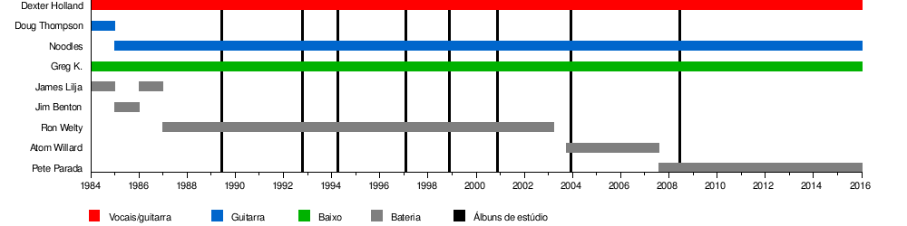

Lista de integrantes da banda The Offspring
Publicado por Arthur Baldner em
The Offspring foi formada em 1984, sendo inicialmente formada por Doug Thompson (vocalista), Dexter Holland (guitarrista), Greg K. (baixista) e Jim Benton (baterista), porém Thompsn e Benton saíram da banda ainda em 1984. Com algumas mudanças ao longos dos anos, hoje a banda ainda conta com Holland, tendo adicionado Kevin "Noodles" Wasserman como guitarrista, Todd Morse como baixista e Peter Parada como bateirista.
Membros atuais:
Bryan Keith Holland (Dexter Holland) - ativo desde 1984
Músico, empresário e biólogo estudante de doutorado, fundou junto com Greg Kriesel a banda Manic Subsidal, que depois mudou de nome para The Offspring. Nela, Dexter é o vocalista principal, guitarrista ritmico e principal compositor. Fã de rock, algumas de suas bandas favoritas e que serviram como inspiração para suas músicas são 'The Beatles', 'Ramones' e 'The Rolling Stones'Kevin Wasserman (Noodles) - ativo desde 1985
É guitarrista e compositor da banda The Offspring. Antes do The Offspring, Noodles participou de uma banda chamada Clowns of Death, e conheceu os membros de sua banda atual após comprar bebidas alcoólicas diversas vezes para os outros membros, que ainda eram menores de idade.Todd Morse - ativo desde 2019
Baixista da banda The Offspring, já passou por bandas como H2O, Juliette e Licks. Participou de sua primeira banda, H2O, com seu irmão Toby Morse, vocalista da banda. Além disso, já namorou a famosa cantora Pink.Peter Parada (Pete Parada) - ativo desde 2007
Baterista da banda The Offspring, já tocou em diversas bandas como Face to Face, Alkaline Trio, Saves the Day e Engine. Entrou no lugar de Atom Willard, e é o membro mais jovem da banda.Membros anteriores:
- Greg Kriesel (ativo entre 1984 e 2018) - baixo e vocal de apoio.
- Doug Thompson (ativo somente em 1984) - vocal líder.
- Jim Benton (ativo somente em 1984) - bateria.
- Marcus Parrish (ativo somente em 1985) - guitarra.
- James Lilja (ativo entre 1984 e 1987) - bateria e vocal de apoio.
- Ron Welty (ativo entre 1987 e 2003) - bateria.
- Atom Willard (ativo entre 2003 e 2007) - bateria.
Linha do tempo com a formação da banda ao passar dos anos:

Já participaram da banda por curtos prazos de tempo:
- Chris "X-13" Higgins (ativo entre 1994 e 2005) - vocal secundário, guitarra, teclado e percussão.
- Ronnie King (ativo entre 2003 e 2004) - teclado, percussão, eletrônicos.
- Andrew Freeman (ativo somente em 2008) - guitarra.
- Warren Fitzgerald (ativo somente em 2008) - guitarra.
- Scott Shiflett (ativo somente em 2008) - baixo.
- Tom Thacker (ativo somente em 2013 e em 2017) - guitarra.
- Tony Kanal (ativo entre 2018 e 2019) - baixo.
- Jonah Nimory (ativo somente em 2017 e em 2019) - guitarra, teclado, vocal secundário.